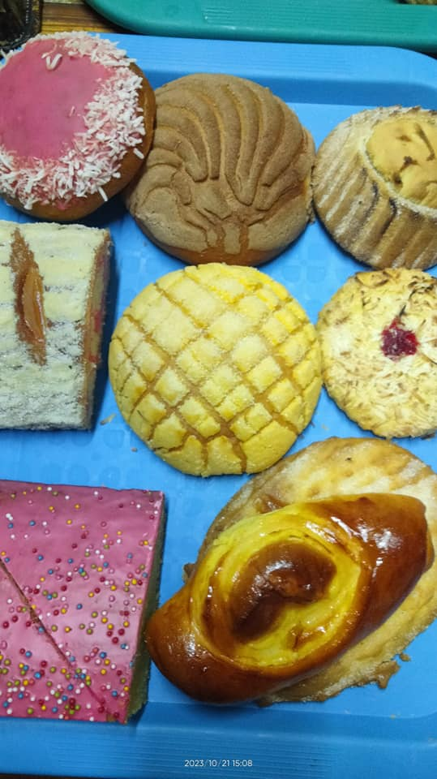

CON USTEDES NUESTRO AMPLIO CATÁLOGO
1. Pan birote
2. Torcido
3. Cortadillo
4. Pan de vieja
5. Concha
6. y muchos más que puedes encontrar en nuestra tienda o por pedidos

Esperamos sea de su agrado
1. Página Principal
2. Introducción
3. Objetivo
4. Desarrollo
5. Conclusiones
6. Bibliografía